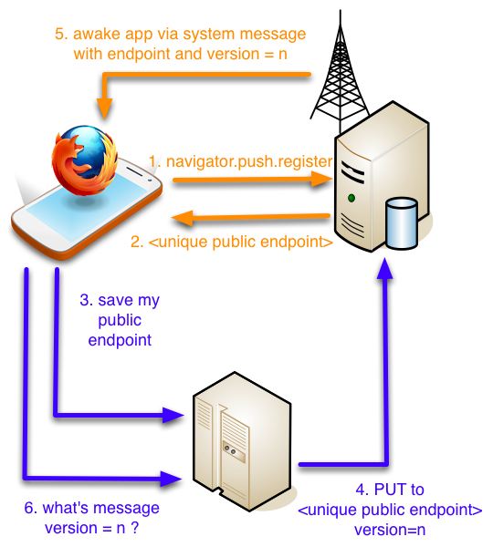

Telefonica ♥ Mozilla Firefox
Available on the phones since version 1.1
In the process of being standarised

Let's take a deep look and demistify the Simple Push API.
As many Firefox OS APIs, you'll need to ask for the permissions to receive push notifications.
"permissions": {
"push": {}
},
"messages": {
"push": "/index.html"
}
We control which document will handle the notification.
if (!navigator.push) {
alert('Sorry push not supported');
return;
}
var request = navigator.push.register();
request.onsuccess = function onSuccess() { ... };
request.onerror = function onError(e) { ... };
request.onsuccess = function onSuccess() {
var endPoint = request.result;
// ... now we have a way to be notified
}
Use any mechanism, but that end point is the public way of your app being notified.
XMLHttpRequest, JSONP, websockets, you choose.
When something on our application logic needs to notify the user for any reason, we can do that with the following action
curl -X PUT --data 'version=<version_number>' '<end point we got>'
window.navigator.setMessageHandler('push',
function onPushNotification(evt) {
var endpoint = evt.pushEndpoint;
var version = evt.version;
//.... do your magic ....
});
// Listen to a new notification channel,
// register a callback for an action
// when we get the notification.
window.PushHelper.listen('notifications', null,
function onNotifiaction() {
alert('We got a notification');
});
// Tell your server the channels to communicate
// with this phone.
window.PushHelper.register(function saveMyChannels(channels) {
// Your logic to send the data goes here
});
// Start listening to push messages.
window.PushHelper.init();